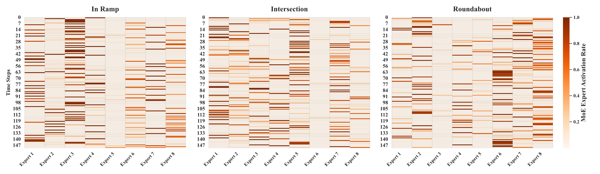
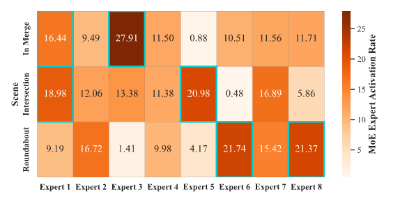

Main Video
Experimental Results
Main Results
Comparison of security, efficiency, and comfort test results of different methods in multiple scenarios:
| Scenario | Model | Success Rate | Collision Rate | Average Episodic Reward | Average Velocity (m/s) | Acceleration Variance | Average Completion Steps |
|---|---|---|---|---|---|---|---|
| In Ramp | PPO-Lag | 0.95 | 0.02 | 191.86 | 7.06 | 0.38 | 250.67 |
| In Ramp | RPID | 0.99 | 0.01 | 196.27 | 7.47 | 0.38 | 242.57 |
| In Ramp | IBC | 0.86 | 0.11 | 190.28 | 8.03 | 0.35 | 220.78 |
| In Ramp | Ours | 1.00 | 0.00 | 197.52 | 8.61 | 0.37 | 210.99 |
| Intersection | PPO-Lag | 0.90 | 0.10 | 116.79 | 6.30 | 0.45 | 172.02 |
| Intersection | RPID | 0.63 | 0.37 | 98.57 | 7.28 | 0.39 | 125.42 |
| Intersection | IBC | 0.68 | 0.31 | 98.94 | 5.75 | 0.35 | 163.48 |
| Intersection | Ours | 0.94 | 0.06 | 121.54 | 6.34 | 0.45 | 174.05 |
| Roundabout | PPO-Lag | 0.64 | 0.18 | 142.77 | 6.56 | 0.45 | 203.43 |
| Roundabout | RPID | 0.58 | 0.19 | 134.96 | 7.23 | 0.40 | 174.90 |
| Roundabout | IBC | 0.70 | 0.22 | 139.71 | 6.41 | 0.35 | 245.98 |
| Roundabout | Ours | 0.90 | 0.10 | 177.85 | 6.83 | 0.45 | 246.06 |
Expert Activation Analysis

Temporal activation patterns of experts across driving scenarios

Scenario-level expert activation aggregated across episodes, where Experts 1 and 3 dominate in Merge, Experts 1 and 5 dominate in Intersection, and Experts 6 and 8 dominate in Roundabout, while Experts 2 and 4 exhibit occasional activation across multiple scenarios
Ablation Study
Performance comparison of model variants across driving scenarios:

Contribution of Transformer and MoE stages
Baseline-U
Sce-1: 0.68 | Sce-2: 0.71 | Sce-3: 0.91
Baseline-T (+ Transformer)
Sce-1: 0.76 | Sce-2: 0.84 | Sce-3: 0.98
Ours (+ MoE)
Sce-1: 0.94 | Sce-2: 0.90 | Sce-3: 1.00